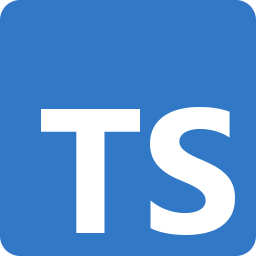
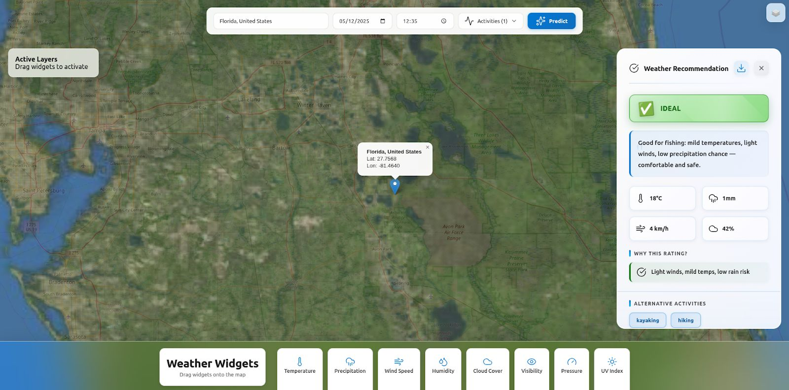
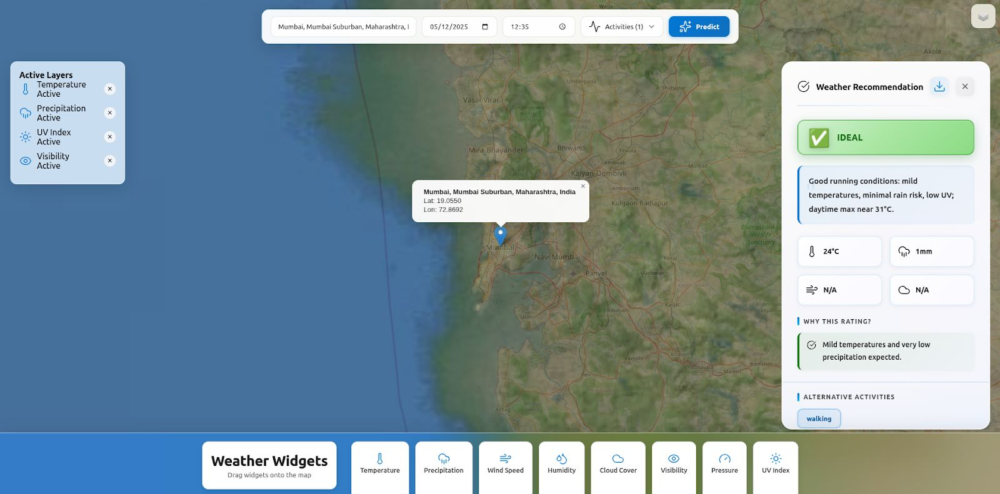
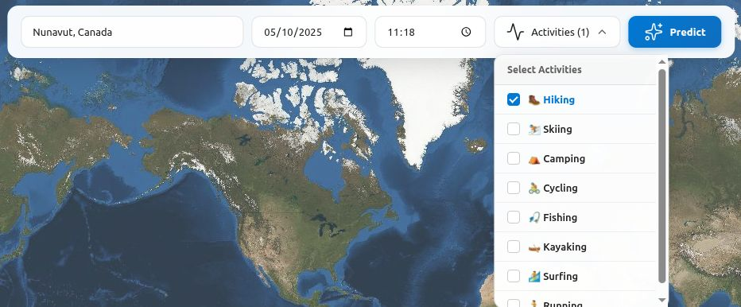
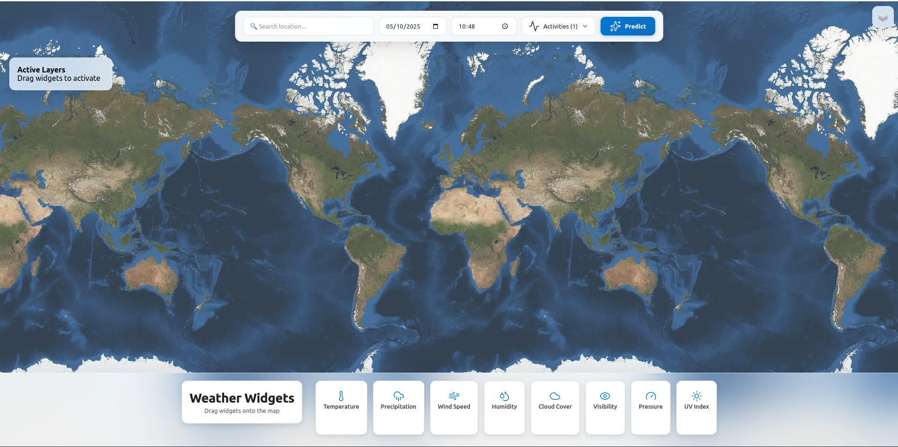

Built With
The Tech Stack

TypeScript Vite
Vite Leaflet.js
Leaflet.js
 Flask
Flask
OpenAI API NASA
POWER
NASA
POWER Node.js
Node.js
 Python
Python
An interactive weather intelligence platform that transforms NASA Earth observation data into personalized, activity-aware weather recommendations powered by AI.
Weather forecasts are everywhere — yet most still treat every user the same. A runner, a farmer, and a photographer all receive the same generic data.
Built during the NASA Space Apps Challenge 2024, WeatherWise is an interactive platform that combines NASA's Earth observation datasets with an AI-powered recommendation engine through a beautiful map-based interface. Users select activities and locations, and the system synthesizes satellite data into natural-language insights tailored to what they actually plan to do.
Leaflet.js map with NASA Blue Marble & MODIS satellite imagery layers for real-world context.
Drag-and-drop weather widgets for temperature, humidity, wind speed, UV index placed directly on the map.
Select your planned activities and get personalized weather recommendations from an AI that understands context.
Live integration with NASA's POWER API for research-grade meteorological data spanning decades of observations.
WeatherWise doesn't rely on consumer-grade weather APIs. It taps directly into NASA's POWER (Prediction Of Worldwide Energy Resources) project. These are the same datasets used by researchers, climate scientists, and agricultural planners worldwide.
By leveraging NASA's multi-decade Earth observation archive, WeatherWise provides weather intelligence backed by continuous satellite monitoring, reanalysis models, and ground-truth validation.
From satellite imagery overlay to AI-generated activity briefs — here is a walkthrough of WeatherWise's core interfaces.

AI-generated weather insights for a selected location, with draggable metric widgets overlaid on the interactive map.

Toggle NASA Blue Marble and MODIS imagery layers in real-time for enhanced weather visualization context.

Choose from running, hiking, photography, gardening & more while the AI tailors recommendations to your plans.

WeatherWise was developed as part of the global NASA Space Apps Challenge 2024 hackathon.
Every feature was designed to close the gap between raw satellite data and human decision-making.
Every feature was designed to close the gap between raw satellite data and human decision-making.
Click any location on the map or search by name. Nominatim geocoding resolves coordinates and the NASA POWER API returns hyperlocal weather parameters in seconds.
Temperature, humidity, wind speed, and UV index cards live on the map canvas. Reposition them freely for a personalized dashboard layout.
Raw NASA data is synthesized by OpenAI into natural-language briefs: "Good running conditions with moderate UV — sunscreen is recommended."
Toggle between NASA Blue Marble and MODIS Corrected Reflectance layers to visualize cloud cover, vegetation, and atmospheric conditions.
A two-tier architecture separating the rich interactive frontend from a lightweight Python intelligence backend.
User clicks a map location and selects activities via the TypeScript/Vite frontend. Nominatim resolves the coordinates.
Flask backend queries NASA's POWER API for meteorological parameters — temperature, humidity, wind, solar radiation, precipitation.
Weather data + selected activities are composed into a structured prompt. OpenAI generates personalized, activity-aware insights returned to the map UI.
Building a real-time geospatial intelligence app in 48 hours pushed us across multiple engineering frontiers.
Keeping draggable weather widgets, satellite overlays, and AI recommendation panels in sync required careful state management across Leaflet's event system and our custom TypeScript components.
The POWER API returns parameters in varying units and temporal resolutions. We built a normalization layer on the Flask backend to standardize values before passing them to the LLM.
Getting the AI to produce concise, actionable recommendations required iterative prompt tuning with activity-specific context injection and output format constraints.
Balancing feature ambition with hackathon reality. We scoped aggressively by prioritizing the click-to-insight core flow over peripheral features.
Keeping draggable weather widgets, satellite overlays, and AI recommendation panels in sync required careful state management across Leaflet's event system and our custom TypeScript components.
The POWER API returns parameters in varying units and temporal resolutions. We built a normalization layer on the Flask backend to standardize values before passing them to the LLM.
Getting the AI to produce concise, actionable recommendations required iterative prompt tuning with activity-specific context injection and output format constraints.
Balancing feature ambition with hackathon reality. We scoped aggressively by prioritizing the click-to-insight core flow over peripheral features.
WeatherWise wasn't about building another weather app — it was about reimagining how humans interact with Earth observation data.
Instead of dumping raw numbers, WeatherWise asks "What are you planning to do?" and adapts the entire experience around the answer. Same weather, radically different advice for a jogger vs. a photographer.
Weather data lives on the map itself — not in sidebars or tables. Draggable widgets create a spatial relationship between location and conditions that feels intuitive and immediate.
NASA's POWER API is powerful but complex. We wrapped it in a conversational interface that makes satellite-grade weather intelligence accessible to anyone.
We designed with extensibility in mind — the architecture supports adding new data layers, activities, and recommendation types without restructuring the core pipeline.

TypeScriptViteLeaflet.js
Flask
OpenAI APINASA
POWERNode.js
Python
View the source code, download the certificate, or check out other work.